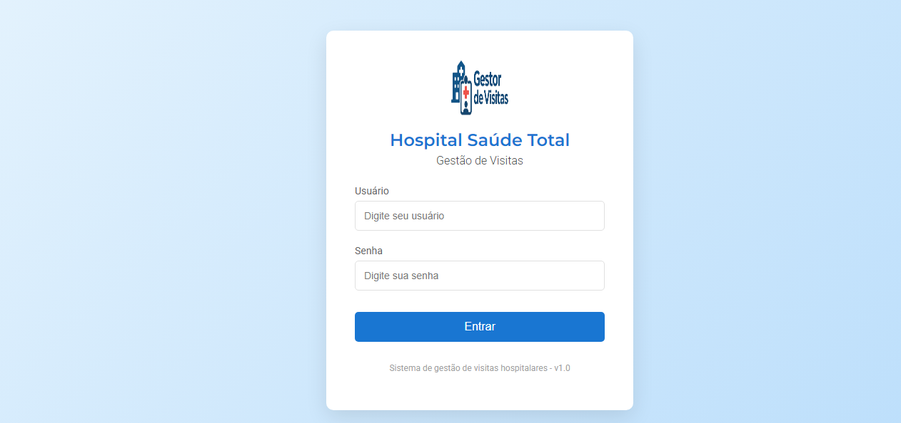
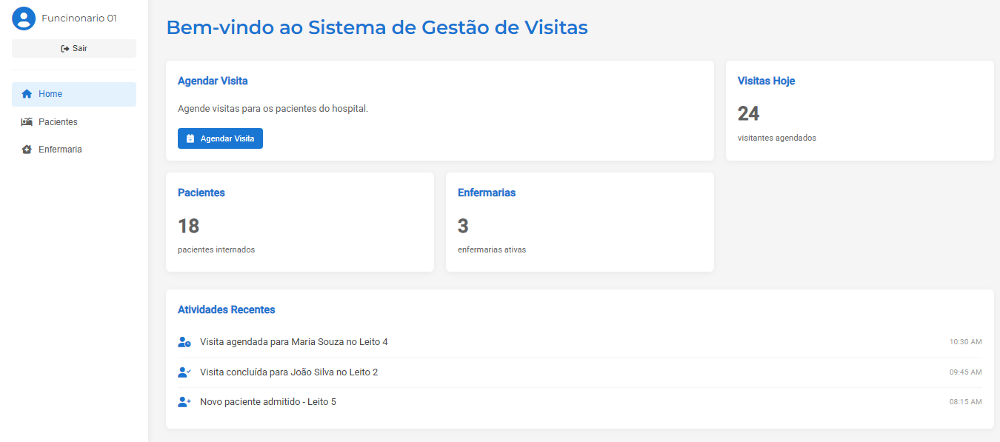
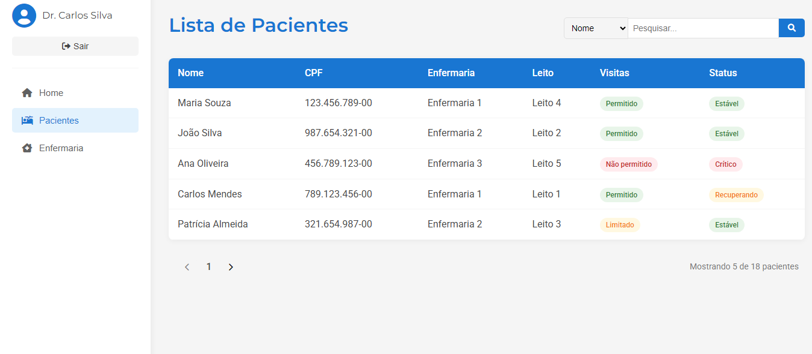

Sistema de Controle de Visitantes em Hospital
Disciplina: Engenharia de Software
Sobre o projeto
Sistema desenvolvido para automatizar o controle de visitas hospitalares, permitindo cadastro de visitantes e pacientes, registro de entradas e saídas, histórico de visitas e gerenciamento de autorizações, promovendo maior segurança e organização dos processos.
Principais funcionalidades:
- Cadastro de visitantes e pacientes
- Registro de entrada e saída de visitas
- Histórico completo de visitas realizadas
- Gerenciamento de autorizações de visita
Documentação do projeto
A documentação completa (requisitos, UML, protótipos e demais entregas) está publicada em formato de revista digital.
Abrir PDF do projetoFotos do projeto



Tecnologias e competências utilizadas
| Competência | Aplicação no projeto |
|---|---|
| Engenharia de Software | Base metodológica do desenvolvimento do sistema |
| Levantamento de Requisitos | Definição das necessidades do controle de visitas |
| UML | Modelagem visual do sistema |
| Casos de Uso | Descrição das funcionalidades e atores do sistema |
| Diagrama de Classes | Estrutura das entidades (visitante, paciente, visita) |
| Diagrama de Sequência | Fluxo de registro de entrada e saída |
| Documentação de Software | Registro técnico e descritivo do projeto |
| Modelagem de Sistemas | Representação do funcionamento do hospital |
| Trabalho em Equipe | Divisão de tarefas entre os integrantes |
| Prototipação de Interfaces | Telas e fluxo visual antes da implementação |